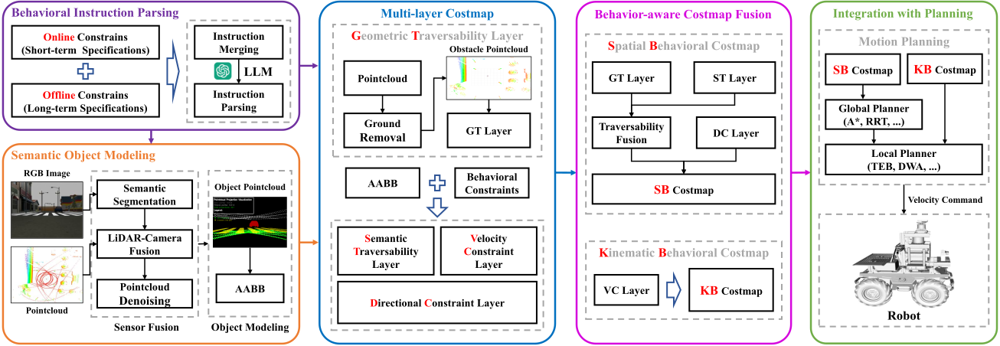
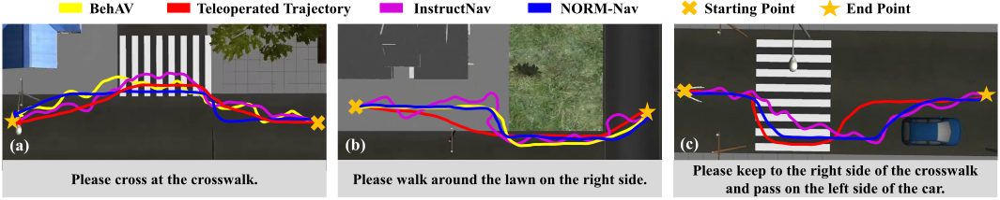
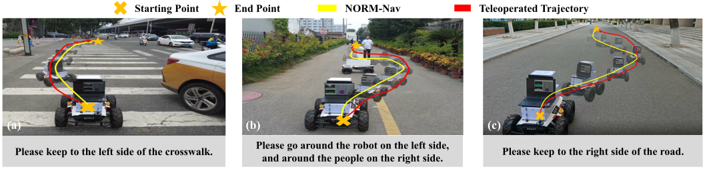

A framework that interprets natural language behavioral constraints and incorporates them into costmap-based planning without requiring additional training.
Seamlessly integrates with standard costmap-based navigation systems without modifying the underlying planner, supporting flexible adaptation to different behavioral requirements.
Validated through extensive simulation and real-world experiments, demonstrating improved task success rates and human-like trajectory generation.
Mobile robots operating in human-centered environments must generate not only collision-free paths but also trajectories that follow local behavioral conventions. Conventional costmap-based navigation emphasizes geometric feasibility and often overlooks such requirements, which can result in socially inappropriate behaviors. This paper presents NORM-Nav, a zero-shot framework that integrates natural language behavioral constraints into costmap-based planning. An LLM parses each instruction into structured constraints and grounds them using real-time vision–LiDAR perception. These constraints are encoded as multi-layer costmaps that represent geometric, semantic, directional, and velocity cues and are directly compatible with standard grid-based planners. Simulation and real-world experiments indicate that NORM-Nav improves task success rates and produces trajectories closer to human references than representative baselines.

The architecture of the proposed method for zero-shot navigation under natural language behavioral constraints. The system integrates LLMs with vision-LiDAR perception and encodes parsed behavioral instructions into multi-layer costmaps for motion planning.

Simulation results on three representative navigation tasks. The proposed method produces stable trajectories that closely follow human-operated reference paths, outperforming baseline approaches.

Real-world demonstrations of behavior-constrained navigation. The proposed method successfully follows natural language instructions without collisions, generating stable trajectories that remain close to human-operated reference paths.
If you find our work useful in your research, please consider citing:
@inproceedings{huo2026normnav,
title={NORM-Nav: Zero-Shot Mobile Robot Navigation with Natural Language Behavioral Constraints},
author={Dongjie Huo and Junhui Wang and Chao Gao and Yan Qiao and Dong Zhang and Guyue Zhou},
booktitle={Proc. IEEE Int. Conf. Robot. Autom. (ICRA)},
year={2026}
}